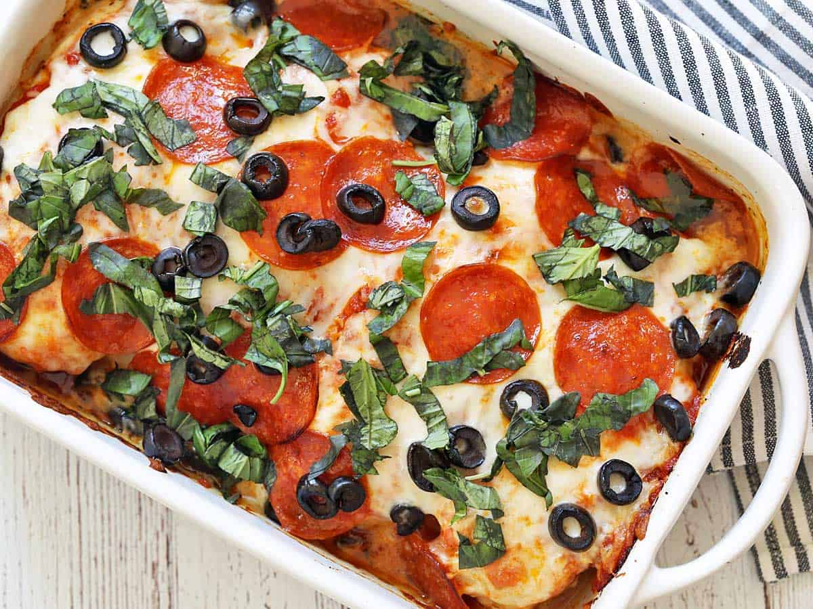

Pizza Chicken

Description
I always have chicken breasts in the fridge. And if not in the fridge, then I have them in my freezer. Can you relate? It's definitely not the most exciting food item one can eat. But it's accessible, affordable, and EASY.
Pizza chicken is a great way to elevate the basic, boring-yet-reliable chicken breast into a fun, delicious dish that everyone likes - the adults and the kids.
Ingredients
- ⅓ 4 (8 oz) boneless skinless chicken breasts*
- Olive oil cooking spray
- 1 teaspoon Diamond Crystal kosher salt
- ¼ teaspoon black pepper
- ½ teaspoon garlic powder
- ½ teaspoon dried oregano
- ½ cup pizza sauce no added sugar (I use Rao's)
- 1 cup shredded part-skim mozzarella cheese (4 oz)
- 1 oz pepperoni (16 slices)
- ¼ cup black olives sliced
- ¼ cup chopped fresh basil
Steps
- Preheat your oven to 450 degrees F. Spray a rimmed baking dish with olive oil spray. I use a 10 X 7-inch ceramic baking dish from Sur La Table.
- Place the chicken breasts in the baking dish, flat side up. Lightly spray them with olive oil. Sprinkle them with kosher salt, black pepper, garlic powder, and oregano. Bake for 15 minutes.
- Remove the baking dish from the oven. Turn the chicken breasts. At this point, you can lightly spray them with more oil and sprinkle with a bit more salt and pepper, but it’s optional. Top the chicken evenly with pizza sauce, shredded mozzarella, pepperoni, and olives.
- Return the baking dish to the oven. Bake until the chicken is cooked through and the cheese is melted, about 15 more minutes. Garnish with chopped basil and serve.
Return to Home Page